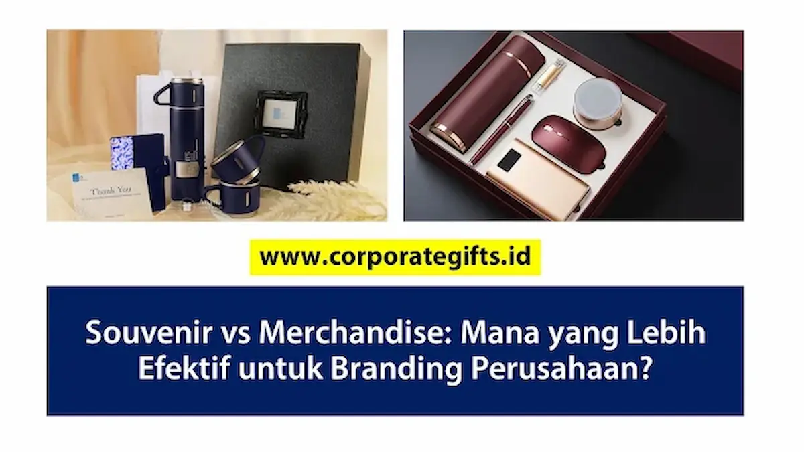

Corporate Gifts ID - Dalam strategi pemasaran modern, pemilihan media promosi yang tepat dapat memperkuat citra merek (brand image) secara signifikan. Dua pilihan populer yang sering dipertimbangkan pengelola bisnis adalah souvenir kantor dan merchandise perusahaan. Keduanya sama-sama berfungsi sebagai media branding, namun memiliki karakteristik esensial, jangkauan audiens, dan kalkulasi efektivitas yang sangat berbeda.
Poin Kunci Souvenir vs Merchandise:
- Tujuan Esensial: Souvenir kantor ditujukan untuk mempererat relasi VIP dan kenang-kenangan formal, sedangkan merchandise berfokus pada perluasan brand awareness publik.
- Tingkat Utilitas: Merchandise dipakai harian sebagai "baliho berjalan", sementara souvenir lebih menonjolkan estetika dan prestise.
- Skalabilitas Biaya: Merchandise sangat hemat untuk pesanan kuantitas massal, sedangkan souvenir membutuhkan bujet satuan lebih tinggi karena material mewah.
- Sinergi Ideal: Kombinasi keduanya menghasilkan kampanye promosi terintegrasi yang menyentuh audiens eksklusif sekaligus khalayak umum.
Secara umum, souvenir kantor bersifat simbolis dan eksklusif, dirancang khusus untuk menjaga relasi pada perhelatan formal atau kunjungan protokoler. Sebaliknya, merchandise perusahaan bertindak sebagai alat promosi fungsional dengan utilitas harian, sehingga sangat efektif meningkatkan paparan merek secara organik dan berkesinambungan. Menentukan mana yang paling tepat memerlukan pemahaman mendalam atas tujuan kampanye promosi dan target audiens Anda.
Daftar Isi Artikel
Souvenir Kantor: Hadiah Simbolis dengan Nilai Relasi
Souvenir kantor umumnya dialokasikan dalam perhelatan resmi seperti seminar eksekutif, workshop kemitraan, perayaan corporate anniversary, atau kunjungan kerja diplomatik dan B2B. Nilai utamanya terletak pada bentuk apresiasi simbolis bernilai tinggi untuk membina hubungan emosional yang hangat, penuh respek, serta memberikan impresi profesional mendalam kepada tamu undangan atau klien VIP.
Kelebihan Souvenir Kantor:
- Kesan Formal dan Eksklusif: Memancarkan aura prestise tinggi yang mencerminkan kredibilitas institusi pemberi.
- Tanda Kenang-kenangan Otentik: Menjadi memori fisik berharga atas momen kolaborasi penting yang tak mudah dilupakan.
- Memperkuat Relasi B2B: Mendorong loyalitas kemitraan jangka panjang berkat perhatian personal melalui bingkisan berkelas.
Kekurangan Souvenir Kantor:
- Utilitas Harian Terbatas: Beberapa item souvenir berbentuk plakat atau hiasan pajangan cenderung hanya disimpan di lemari kerja.
- Jangkauan Paparan Terbatas: Eksposur visual identitas merek umumnya hanya dinikmati oleh penerima secara privat.

Penggunaan merchandise fungsional seperti totebag, tumbler stainless steel, dan kaos polo custom memberikan paparan brand secara konsisten di ruang publik.
Merchandise Perusahaan: Alat Branding yang Fungsional
Merchandise dirancang bukan hanya sebagai cinderamata biasa, melainkan bertindak layaknya "baliho berjalan" (walking billboard). Produk-produk utilitas tinggi seperti tote bag kanvas, tumbler stainless steel custom, hingga kaos polo korporat sering menjadi opsi utama karena mampu dibawa bepergian dan digunakan berulang kali di area publik.
Kelebihan Merchandise Perusahaan:
- Jangkauan Paparan Luas (High Brand Exposure): Setiap kali produk digunakan di luar ruangan, logo dan pesan merek Anda dilihat oleh puluhan orang baru.
- Efisiensi Biaya Produksi: Semakin besar volume produksi massal (economies of scale), biaya per unit menjadi jauh lebih terjangkau.
- Desain Fleksibel dan Dinamis: Mudah disesuaikan dengan tren visual kekinian, kampanye musiman, maupun identitas grafis perusahaan terkini.
Kekurangan Merchandise Perusahaan:
- Memerlukan Perencanaan Desain Matang: Desain yang kaku atau penempatan logo yang terlalu mencolok tanpa sentuhan estetika dapat membuat produk enggan dipakai.
- Risiko Reputasi dari Kualitas: Material yang lekas rusak atau sablonan yang mudah luntur justru menimbulkan impresi negatif terhadap kredibilitas brand.
Perbandingan Efektivitas untuk Branding
Untuk memudahkan evaluasi dalam pengadaan barang promosi kantor Anda, berikut adalah komparasi mendalam antara souvenir kantor dan merchandise promosi perusahaan:
| Aspek Evaluasi | Souvenir Kantor | Merchandise Perusahaan |
|---|---|---|
| Brand Exposure | Sangat Terbatas (Privat / Penerima Langsung) | Luas & Berkelanjutan (Publik / Ruang Terbuka) |
| Fungsi Produk | Lebih Simbolis, Estetika, & Memorable | Fungsional Tinggi, Dipakai Berulang Kali |
| Biaya Produksi | Cenderung Lebih Tinggi per Satuan Unit | Sangat Efisien & Fleksibel untuk Produksi Massal |
| Kesan Penerima | Eksklusif, VIP, Berbobot, & Menghargai Relasi | Modern, Praktis, Trendi, & Menunjang Gaya Hidup |
Rekomendasi Strategis Penerapan Media Branding
Kedua sarana promosi ini tidak saling meniadakan, melainkan saling melengkapi. Berikut panduan praktis untuk menentukan alokasi pengadaannya:
- Pilih Souvenir Kantor: Tepat untuk acara protokoler instansi, serah terima jabatan (sertijab), kunjungan direksi, peresmian fasilitas gedung, atau jamuan makan malam bersama mitra strategis tingkat atas.
- Pilih Merchandise Perusahaan: Sangat ideal untuk kampanye aktivasi merek, peluncuran produk baru ke pasar, pameran dagang (expo), festival kampus, serta bingkisan apresiasi karyawan internal.
- Kombinasikan Keduanya: Apabila anggaran Anda mencukupi, siapkan paket ganda: berikan cinderamata eksklusif bagi pembicara dan tamu VIP di ruang terpisah, lalu bagikan merchandise praktis kepada ratusan peserta di ruang seminar umum.
Kesimpulan: Menentukan Pilihan Media Promosi Terbaik
Dari sudut pandang jangkauan promosi (reach) dan efisiensi biaya, merchandise perusahaan terbukti lebih efektif untuk strategi pemasaran jangka panjang karena produknya berutilitas harian, mudah dibawa ke mana saja, dan menyebarkan identitas visual brand ke ranah publik secara organik.
Di sisi lain, eksistensi souvenir kantor tetap tidak tergantikan untuk momentum seremonial yang menuntut rasa hormat, prestise, dan kehangatan relasi personal tingkat tinggi. Pilihlah jenis media promosi yang selaras dengan tujuan strategis kampanye, karakter audiens sasaran, dan alokasi anggaran perusahaan Anda saat ini.
Pertanyaan Seputar Souvenir vs Merchandise (FAQ)

Ditulis oleh: Arinda Zakia
Corporate Gifting & Merchandise SpecialistSpesialis pengadaan gift set dan perencana merchandise promosi di CorporateGifts.ID dengan pengalaman lebih dari 7 tahun mendampingi ratusan perusahaan nasional dan instansi B2B.
Lihat Profil Lengkap & Panduan Lainnya